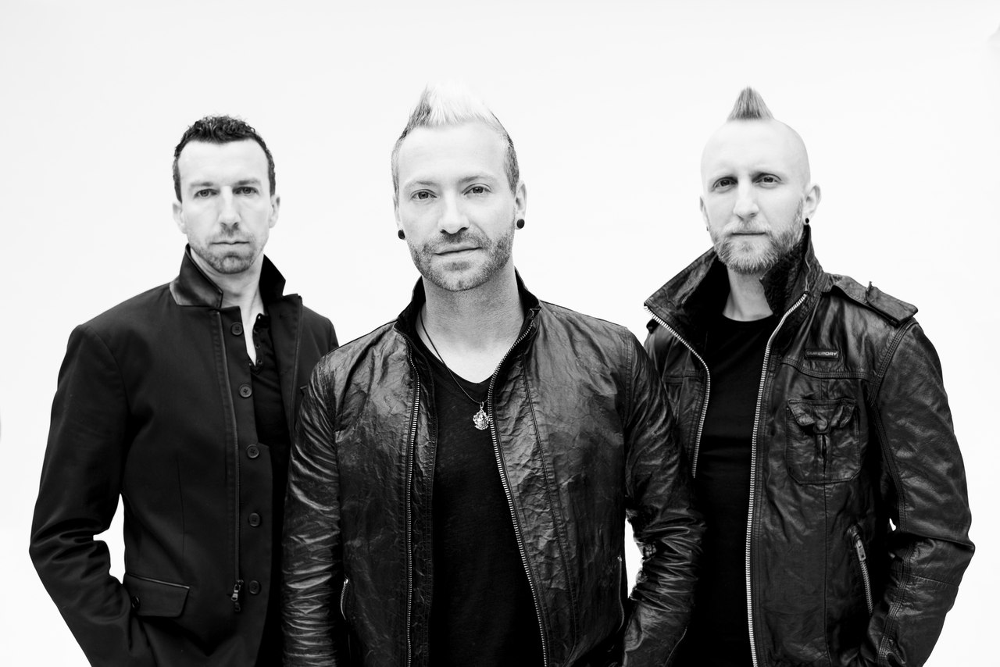

Peterborough, Canada hard rock trio Thousand Foot Krutch made their debut in 1995 when Trevor McNevan, Joel Bruyere, and Steve Augustine started putting a praise & worship spin on the nu-metal sound of the time. After building a buzz around Ontario with numerous shows and a strong demo titled That's What People Do, Thousand Foot Krutch signed with Diamante and issued their debut LP, Set It Off, in 2000. The album featured a cover of EMF's "Unbelievable" on a set that veered toward the sounds of P.O.D. and Papa Roach. TFK signed with Tooth & Nail for September 2003's Phenomenon. They'd developed considerably in the two years since Set It Off, and the new album reflected a more focused rock sound, much like Chevelle or Finger Eleven. During this era, McNevan and Augustine also formed a pop-punk side band dubbed FM Static. Released in 2005, The Art of Breaking adopted an even heavier rock sound, doubling down on the introspection, angst, and emotion. Produced by Arnold Lanni (Our Lady Peace, Finger Eleven), it was the band's first album to break into the Billboard 200 (at number 67).
From there, the band would continue to rise in the charts. In 2007, they released their fifth full-length, The Flame in All of Us, which was produced by Ken Andrews (Beck, Chris Cornell, Pete Yorn). Arriving in 2009, the aggressive Welcome to the Masquerade, which would be the band's last release with Tooth & Nail, entered the Billboard Top 200 at number 35, peaking at number two on the Christian rock chart. It was their most successful album to date and would spawn the band's first live album, Live at the Masquerade. The group's next studio album, The End Is Where We Begin, was issued in 2012. It was their first album released entirely independently. Continuing the upward chart trajectory with each subsequent release, The End debuted at number 14 on the Billboard 200, and claimed the top spots on both the hard rock and Christian charts. In late 2013, the band released Made in Canada: The 1998-2010 Collection, which included two new tracks. Thousand Foot Krutch remained independent into 2014, relying on crowd-sourcing for the release of the energetic Oxygen: Inhale, the first part of a pair of hard rock chart-topping LPs. The heavier Exhale followed in 2016, marking TFK's third consecutive Christian number one.